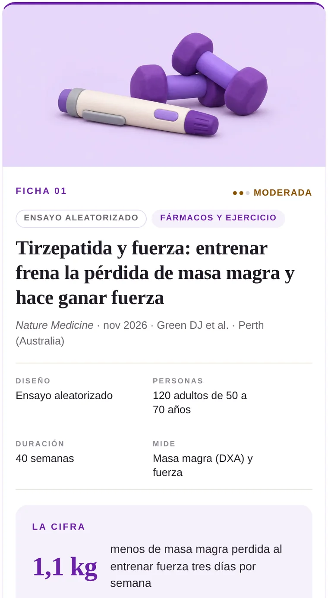
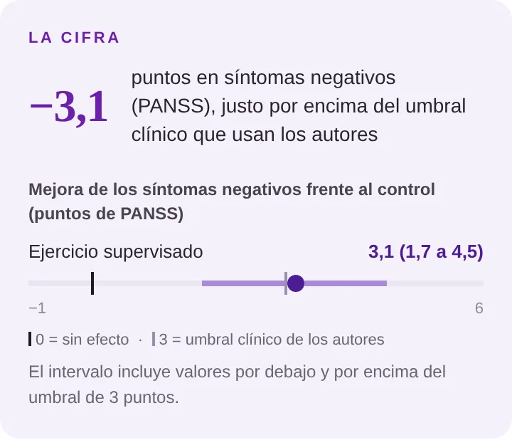
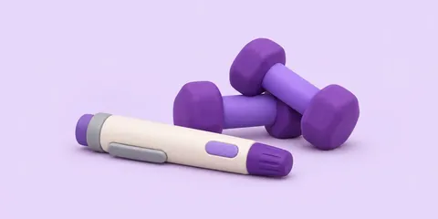
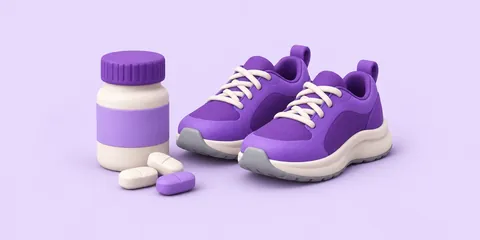
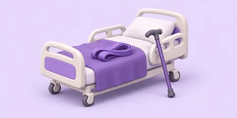
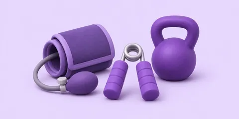
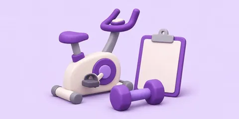

Para curiosos y profesionales
Seis estudios del mes y qué cambian en el gimnasio y en la consulta.
Leídos por un internista y resumidos en fichas de un minuto: qué hicieron, qué encontraron, cuánto fiarse y qué cambia.
Sale el viernes 25 de diciembre.
Apuntarte no te suscribe a nada de pago.
Apúntate
El número 1 llega el viernes 25 de diciembre
Solo lo recibe quien se apunta aquí, aunque ya recibas la newsletter del domingo. Si es tu caso, apúntate con el mismo correo.
- Gratis
- Sin tarjeta
- Baja cuando quieras
Si no la recibías ya, al apuntarte recibirás también la newsletter semanal de Fuerza Basada en Evidencia. Puedes darte de baja cuando quieras. Privacidad.
Cómo es por dentro
Una ficha por estudio, de un minuto
Cada ficha dice qué hicieron, qué encontraron, cuánto fiarse y qué cambia: lo que haría distinto mañana, o «nada todavía» si es el caso.
- 1Qué hicieronArriba, la ficha técnica resume el estudio en cuatro datos: diseño, personas, duración y qué mide.
- 2Qué encontraronLa cifra que importa y, cuando ayuda, el gráfico del efecto con su intervalo.
- 3Cuánto fiarseCerteza alta, moderada o baja, y por qué.
- 4Qué cambiaLo que haría distinto mañana en consulta o en el gimnasio, o «nada todavía».
La certeza, de un vistazo
- Alta
- Moderada
- Baja


Número 0 · 27 de noviembre
El número 0, en un minuto
Seis estudios: cuatro ensayos aleatorizados y dos metaanálisis.

01Fármacos y ejercicio
Tirzepatida: entrenar fuerza supervisada tres días por semana conserva 1,1 kg más de masa magra y cambia perder fuerza por ganarla.
ModeradaNature Medicine · ensayo aleatorizado

02Salud mental
Antipsicóticos: el ejercicio supervisado mejora los síntomas negativos y, un poco, la grasa; no la tensión, la glucosa ni los lípidos.
ModeradaJournal of Affective Disorders · metaanálisis

03Hospital y mayores
Ingreso hospitalario: unas cuatro sesiones tipo Vivifrail en mayores de 70 dejan el SPPB al alta 3 puntos por encima del cuidado habitual, en un ensayo pequeño.
BajaAge and Ageing · ensayo aleatorizado

04Cardiovascular
Tensión arterial: los diez tipos de ejercicio estudiados la bajan; destacan el acuático, el mente-cuerpo y el isométrico, pero el orden entre ellos es poco fiable.
AltaMaturitas · metaanálisis en red

05Actividad física
Moverse más: el coaching telefónico quincenal de un fisio suma unos 900 pasos al día a los 6 meses; una llamada inicial con SMS, bastante menos.
AltaBMJ · ensayo aleatorizado

06Oncología
Cáncer gastroesofágico: entrenar durante la neoadyuvancia no hizo que más pacientes llegaran a la cirugía, y la supervivencia, un resultado secundario, fue peor.
ModeradaJAMA Network Open · ensayo aleatorizado
Este número tiene un hilo: el ejercicio empieza a tratarse como parte del tratamiento, no como un consejo al final de la consulta.
En cada número
Qué trae cada número
- Seis estudios recientesDe entrenamiento, nutrición y fármacos con ejercicio.
- Fichas de un minutoQué hicieron, qué encontraron, cuánto fiarse y qué cambia.
- El efecto, con su intervaloGráficos para ver de un vistazo cuánto cambia y con cuánta precisión.
- En un minutoLas seis conclusiones juntas, al principio.
- Glosario rápidoSi un término no te suena, lo tienes al final.
- El enlace a cada estudioPara ir a la fuente cuando quieras.
Revistas del número 0
- Nature Medicine
- BMJ
- JAMA Network Open
- Journal of Affective Disorders
- Age and Ageing
- Maturitas
Lo que estoy leyendo
Candidatos para el número 1
- Proteína vegetal o de suero (whey) para ganar masa magra al empezar a entrenar fuerza (Journal of the International Society of Sports Nutrition).
- RIR o RPE: cuál acierta más al calcular las repeticiones que te quedan antes del fallo (Journal of Sports Sciences).
- La hora del día a la que se entrena y los marcadores cardiometabólicos (Public Health).
- Inyecciones de alto volumen, con o sin corticoide, en la tendinopatía aquílea (BMJ).
- Estrategias de nutrición en la sarcopenia (Nutrients).
Son candidatos: los seis estudios definitivos los elijo al preparar el número.
Cómo funciona
Tres fechas y ninguna sorpresa
- HoyTe apuntas aquí
Gratis y sin tarjeta.
- Viernes 25 de diciembreTe llega el número 1
Seis estudios nuevos, en tu correo. La revisión sale el último viernes de cada mes.
- Viernes 29 de eneroEl número 2, si quieres seguir
Desde el número 2 cuesta 0,99 € al mes (IVA incluido), sin permanencia. En el número 1 te dejo el enlace para suscribirte. Si no haces nada, no se te cobra nada y la newsletter del domingo sigue igual.
Para quién es
Escrita para sanitarios y entrenadores, abierta a quien quiera aprender
Es para ti si…
- Prescribes, enseñas o practicas ejercicio y quieres saber qué dicen los estudios nuevos.
- Te interesa cuánto fiarte de cada resultado, no solo el titular.
- Te gusta aprender aunque no te dediques a esto: va con el lenguaje de los estudios, y con glosario.
Lo que no es
- Un plan de ejercicio individual.
- Un sustituto de la valoración de un médico ni del juicio clínico.

Pelayo Fernández Cidón
Médico internista · prescriptor de ejercicio físico
Cada mes elijo seis estudios recientes de entrenamiento, nutrición y fármacos con ejercicio, y los resumo en fichas de un minuto: qué hicieron, qué encontraron, cuánto fiarse y qué cambia mañana en consulta o en el gimnasio.
Cómo trabajo la evidencia →Preguntas
Antes de apuntarte
¿El número 1 es gratis?
Sí. Te apuntas aquí y te llega el viernes 25 de diciembre. Apuntarte no te suscribe a nada de pago.
Ya recibo la newsletter, ¿me llegará igual?
El número 1 solo llega a quien se apunta en esta página. Apúntate con el mismo correo en el que recibes la newsletter y no tendrás que confirmar nada.
¿Y después del número 1?
Desde el número 2 (viernes 29 de enero), la revisión cuesta 0,99 € al mes (IVA incluido), sin permanencia. En el número 1 te dejo el enlace para suscribirte, por si quieres seguir.
¿Necesito ser sanitario?
No. Está escrita para sanitarios y entrenadores, con el lenguaje de los estudios, pero cada número trae un glosario con los términos técnicos.
¿Sustituye a la valoración de un médico?
No. Resume estudios publicados con fines divulgativos: no sustituye a la valoración de un médico, al juicio clínico ni a un plan de ejercicio individual.
Número 1 · gratis
El viernes 25 de diciembre, seis estudios nuevos en tu correo.
Leídos por un internista. Un minuto cada uno.
Quiero el número 1 gratis